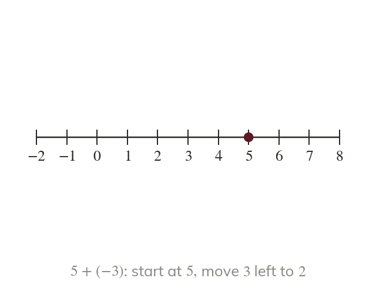
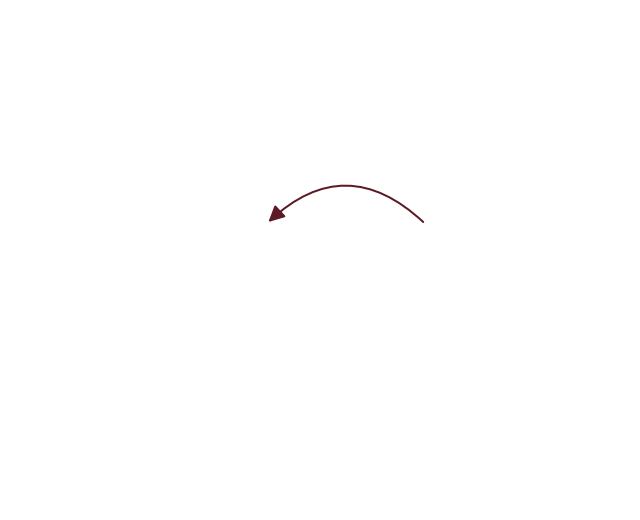

Moving on a number line
On a number line, adding moves right and subtracting moves left. Adding a negative subtracts:
On a number line, adding moves right and subtracting moves left, whatever the signs involved. Adding a negative subtracts: since moving places left is the same whether you call it '+(−3)' or '-3'.